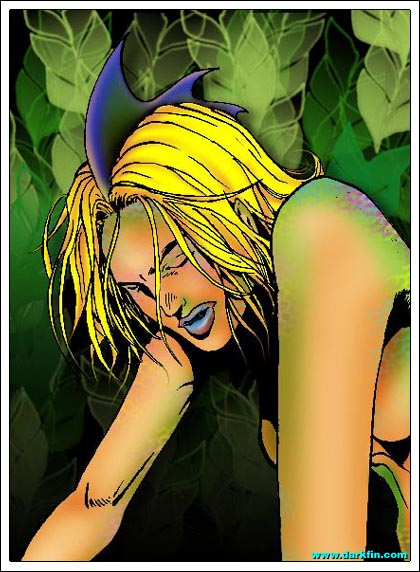
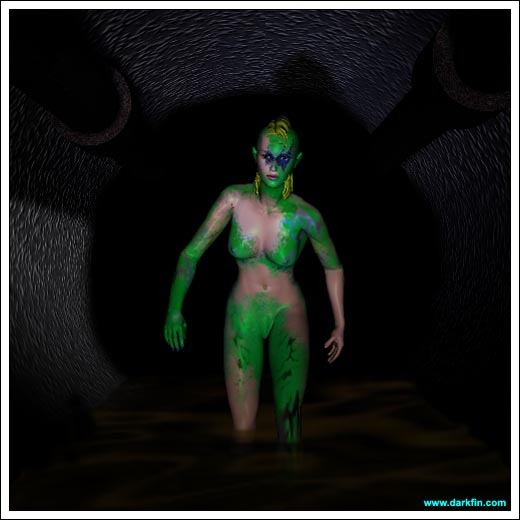
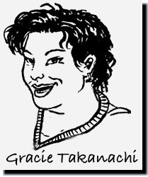
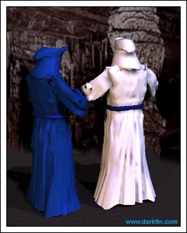

Repose

Erika I... I need... to get...
Gracie She's awake!
Zach Hey there, Super Girl!
Morrigan (Wincing) Coffee breath, guys
Zach (Backing away) Sorry
Gracie You scared the living shit out of us, Morri
Morrigan I did a pretty good job of scaring myself as well
Zach How are you feeling?
Morrigan A little woozy - where am I?
Gracie In "The Butcher Shop" - also known as Bay Valley Medical Center
Morrigan That's nice
Zach Don't worry, you have Stephanie Martel as your doc, she's the only decent one here
Gracie Zach is her biggest fan - ever since he broke his arm roller blading, he's had a huge crush on her
Zach Not true!
Gracie Oh?
Zach She's old enough to be my mom
Gracie And when has this stopped you before?
Morrigan (Trying to sit up) GUYS, this is all very interesting but OW
Zach Sorry, we'll give our full attention back to you now
Morrigan Thank you - is there anything seriously wrong with me?
Gracie Besides having no common sense? - just cuts and bruises - they want to keep you overnight for observation
Morrigan I did what I had to do because it was the right thing to do
Gracie You sound like an oatmeal commercial, stop it!
Zach Should we prepare her now?
Morrigan Prepare me for what?
Gracie The onslaught outside your door - Turner Gates is waiting to meet you
Morrigan The station manager?
Gracie Yes, the great Caesar himself wants to pay you a little visit... thank you for being a hero and jacking up overnight numbers
Morrigan (Rubbing her head) That's all I need
Gracie You have the phones ringing off the hook with concerned viewers - the hallway is stacking up with flowers and stuffed animals
Zach It's giving me frightening flashbacks of my sisters' rooms
Gracie Do we need to go there?
Zach No
Gracie Thought so - anyway, you're a savvy girl, Morri, you know what a self-serving opportunity this is for KCON - the question is... do you wanna play?
Morrigan The small headache I had before is now turning into a throbbing monster!
Zach (Thrusting his hands in his pocket) Speaking of monsters, I saw Kylee in the hall with Turner - she flew back on account of you, Lady McBride
Gracie Yeah, my guess is she'll be doing one of her sickeningly sweet "interview the interviewer" type deals, usually reserved for sweeps
Morrigan Aren't I blessed
Gracie AND, since Doc Steffi is Gates' sister, he could order her to give you an enema until you talked
Morrigan My life keeps getting better with each passing second
Zach It's totally up to you, M&M - say you're too sick and tell them all to screw off... then give your exclusive interview to yours truly for the Daily Beacon!

Morrigan HA - I'll tell you what, I will give you an exclusive quote for your story if you go and get me some hot chocolate
Zach (Smiling) You're a cheap date - if I put marshmallows in it, will you mention my heroics as well?
Morrigan Depends on how many marshmallows you put in, Mr. Isaacson
Zach (Clapping his hands once and pointing) Sounds like a deal
Gracie You know, Morri, he's right, if you don't feel like doing the interview, don't do it
Morrigan (Serious tone) That's the least of my concerns
Gracie The doctors checked you out, you're going to be fine
Morrigan Listen to me, Gracie... I saw the hand!
Gracie I have no idea what you're talking about
Morrigan The hand... THE HAND IN MY DREAM - who or whatever this creature is... rescued me
Gracie Morrigan, Honey, you're tired, you've been through a lot tonight...
Morrigan (Grabbing the dark-haired woman's shoulders) YOU'VE GOT TO BELIEVE ME
Gracie SHHHHH, I do, I do - OK, what do you want me to do about it?
Morrigan Go back to the van, run through the footage, you might have caught something on tape... please
Gracie (Pulling back) Alright, I'll see what I can find
Morrigan (Calmer) Thanks, Gracie... you know I'm not completely nuts, right?
Gracie (Leaving) Yes, I do, now try to get some rest
Morrigan (Looking at her hospital bed) That shouldn't be too hard
Kylee OH, TURNER, IT'S SOOOO HARD, YES, YES BABE, GIVE IT TO ME
Turner (Increasing his rhythm) How many of them were there this time?
Kylee I haven't cum yet but I'm sure it will be DOZENS of times - you are so the master!
Turner (Growing angry) How many NETWORK MEN did you do this time, Kylee?
Kylee (Shifting her position) Why do you ask me that, it only makes you jealous?
Turner (Thumping her against the wall) I... AM... NOT... JEALOUS - HOW... MANY? - ANSWER... ME
Kylee Only four and they weren't that good
Turner Don't be patronizing
Kylee OK, one was hung like a horse and he fucked me until I passed out - happy now?
Kylee (Cool) Don't you even THINK about hitting me, Mr. Gates, or I will make your life a living nightmare - I'm sure your lovely wife and family would enjoy seeing pictures of your dick hanging out of my mouth
Turner (Pulling up his pants) Did you accomplish everything in New York?
Kylee (Fixing her skirt and hair) They agreed to all of your terms - one of them will be flying in to "seal the deal" this week
Turner Fine, meet me in front of McBride's room in five minutes
Kylee (Watching him leave) Fine
Kylee Hi, I'm back - I just finished with the Old Goat and I had to deal with four losers this afternoon - I need a REAL man tonight, are you up for me? - great, give me an hour, bye
Kylee Well now, if it isn't the Dynamic Duo of Duquesa Bay! - what happened Anita, did your girlfriend try to drown you again?
Anita (Shivering in a blanket) Shut up, Kylee
Kylee (Winking) You know you want me - hello Craig, is there a story here?
Craig Not really, Lieutenant Fiore thought she saw a civilian in the water and attempted a rescue... it turned out to be... ahem, a log
Kylee (Beaming directly at a scowling Anita) Excuse me, I didn't quite hear that last part?
Anita A LOG... A FUCKING LOG... NOW, BE A GOOD LITTLE SLUT AND RUN ALONG
Kylee (Over-the-top laughter) I didn't realize you were a tree hugger as well - watch out for splinters!
Kylee (Taking off) Goodnight, Captain
Craig Ms. Shepperton
Anita (Sitting back a little dizzy) That PUTA is going to get hers one day, you mark my words!
Craig Take it easy there - haven't you had enough excitement for one day? - you have a slight concussion
Anita (Rubbing her head) Don't remind me

Erika I have... no other choice
Zach I smell sex and watermelon lipgloss... HELLO, KYLEE
Kylee (Strutting up behind him) Enjoy the smell, Eyes, because it's as close as you'll ever get
Zach Thank God
Kylee Liar
Turner (Putting his arm around Kylee) Zachary
Zach Turner
Turner That was an amazing little piece you did in yesterday's paper
Zach (Glancing at the strawberry blonde) You're doing an amazing little piece yourself, Mr. Gates
Turner We're about to go in and interview my new star reporter on her ordeal
Zach (Protective) You might want to ask Morrigan if she's up to it, first
Turner (Taking the hot chocolate out of Zach's hands) Of course
Turner (Handing her the drink) Ms. McBride, how are you doing? - I'm Turner Gates, the KCON station manager - you gave us all quite the scare earlier
Morrigan (Extending her hand) Nice to finally meet you, sir, sorry about that
Turner Hey, don't be - you had viewers glued to their sets - hell of a way to start your first day
Zach And we both saved a couple of lives
Kylee Does a dog count?
Zach I think so!
Turner That's true - good job, both of you - but I hope you don't think you're getting a bonus so soon, Morgan
Morrigan MORRIGAN... and I already received my bonus when the man thanked me in the ambulance
Turner I know, I know - just joking - so, are you up to getting that "thank you" again on tape?
Morrigan Well, I suppose...
Zach I'll let you two ladies get acquainted, I need to take a leak
Morrigan Thanks for the hot chocolate, Zach
Zach (Hurrying out) Sure thing!
Kylee So, what do you think of Duquesa Bay?
Morrigan Um, I'm not sure yet, I've only been here a day and I've basically been in my car, Gracie's apartment, and the hospital... oh, and the river is very pretty
Kylee (Still filing) Hmm
Kylee I read your resume - over a half-dozen awards - very impressive
Morrigan Thank you - I understand you were Miss Alabama
Kylee AND second runner-up to Miss America
Morrigan Hmm
Kylee Are you interested in the anchor chair?
Morrigan I'm totally happy being a field reporter - I'm not one for sitting on my backside, reading off of a teleprompter
Kylee That's nice - and what do you think of Turner?
Morrigan I think he's my boss, that's it
Kylee (Half smile) Good answer
Kylee You have your territory, I have mine - stay off of mine and we'll get along just fine!
Morrigan Hey, you made a rhyme!
Turner (Handing Kylee a mike) Let's get rolling - McBride, try to look a little more distressed
Turner Perfect!
Morrigan What's wrong, Fingers?
Gracie They're gone

Morrigan What?
Gracie Someone stole my tapes
Zach Are you sure you didn't misplace them?
Gracie If you say that one more time, Eyes, I'm going to SMASH you - someone stole my fucking tapes - the segment footage is all there but the b-roll, GONE
Morrigan Unbelievable
Gracie (Suddenly cheering up) BUT, the good news is that I always make back up copies of everything I shoot and whoever took the originals wasn't aware of that
Morrigan YES - WAY TO GO, TAKANACHI
Gracie (Patting Morrigan's arm) You get some rest, Missy, and I'll be back in the morning with what I find out
Morrigan Thanks
Morrigan (Rolling on her side) Finally, maybe I can get some sleep
Nurse Ms. McBride, since this is a semiprivate room, we will be wheeling in another patient shortly
Morrigan Excellent
Anita I DON'T need to be here - this is ridiculous
Craig It's just a precaution, relax and get some rest
Anita RELAX? - I don't think I can ever relax again - she's REAL, Craig, Aleta Oscura is REAL
Craig (Looking past the curtain to a pseudo sleeping Morrigan) Shh... quiet
Anita (Whispering) I had her in my grasp - then she slapped away my knife like it was nothing
Craig Did you land any blows?
Anita Those scales on her are like a suit of armor - it was like I was punching a linoleum-covered floor, plus she was way stronger than me
Craig Did she try to communicate with you at all?
Anita By trying to drown me, I think she was pretty much saying "fuck you, Anita"
Craig What exactly happened?
Anita She grabbed me by the neck and held me under water to where I started blacking out, I thought for sure I was a goner - next thing I know, I am being flung across the river, over 15 yards, and end up crashing onto the shore
Craig (Scratching his mustache) She could have killed you... why didn't she?
Anita Good question
Erika (Dizzy) I need to rest, first
Erika Why, dammit, why?

Figure (Closing an elaborate wooden chest) It's time to summon the others